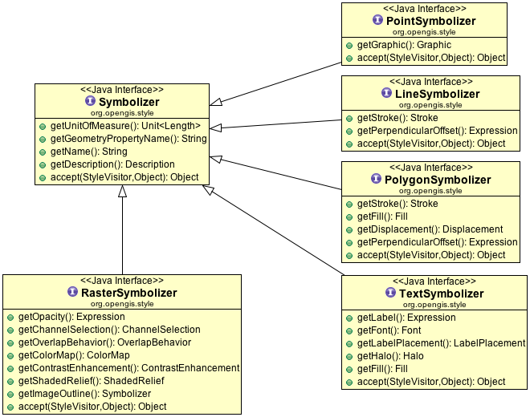
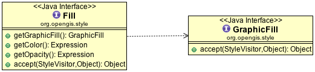
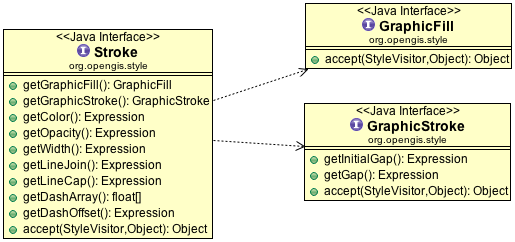
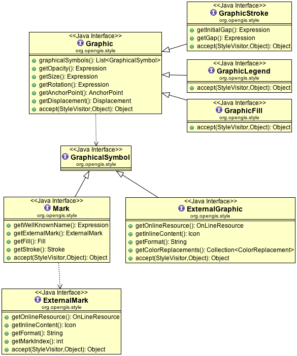

Symbology Encoding¶
The GeoTools rendering process is controlled styling information that you provide. The data structures we use to describe styling are based on the Style Layer Descriptor (SLD) and Symbology Encoding (SE) specifications provided by the OGC.
These specifications define an XML document you can use to save and load your styles on disk, we use the same data structure internally to control the rendering process.
References:
- style (tutorial)
- gt-api sld
- gt-render style
- http://www.opengeospatial.org/standards/sld (style layer descriptor)
- http://www.opengeospatial.org/standards/symbol (symbology encoding)
FeatureTypeStyle¶
The Symbology Encoding specification provides us the FeatureTypeStyle which is focused on how to draw features in a manner similar to CSS.

The key concepts for symbology encoding are:
- FeatureTypeStyle: captures the recipe for drawing a specific kind of feature
- Rule: used to select features for drawing, using a list of symbolizers to control the actual drawing process.
- Symbolizer
Symbolizer¶
A Symbolizer defines how a geometry is to be rendered in terms of pixels; selecting the geometry from the feature, and drawing using the information provided here.
Note
The Symbology Encoding standard does its best to render something in all cases; thus a PointSymbolizer applied to a Polygon will draw a point in the centre, more interestingly a LineSymbolizer applied to a point will draw a small line (of a fixed size) at the indicated location.
The available symbolizers are:
TextSymbolizer
Used to control the labelling system; labels are generated by TextSymbolizers and thrown into the rendering engine which detect overlaps, sorts things out according to priorities you have defined and decides on a final label placement.
LineSymbolizer
Used to control how lines (or edges) are drawn.
PolygonSymbolizer
Used to control how solid shapes are drawn.
PointSymbolizer
Used to draw a point location, the actual graphic drawn is referred to as a Mark with the option to use some well known marks (circle, square etc..) or your own external graphics such as PNG icons.
RasterSymbolizer
Used to control the rendering of raster data with full “color map” control.
Here is a quick example showing the creation of a PointSymbolizer:
//
org.opengis.style.StyleFactory sf = CommonFactoryFinder.getStyleFactory();
FilterFactory2 ff = CommonFactoryFinder.getFilterFactory2();
//
// create the graphical mark used to represent a city
Stroke stroke = sf.stroke(ff.literal("#000000"), null, null, null, null, null, null);
Fill fill = sf.fill(null, ff.literal(Color.BLUE), ff.literal(1.0));
// OnLineResource implemented by gt-metadata - so no factory!
OnLineResourceImpl svg = new OnLineResourceImpl(new URI("file:city.svg"));
svg.freeze(); // freeze to prevent modification at runtime
OnLineResourceImpl png = new OnLineResourceImpl(new URI("file:city.png"));
png.freeze(); // freeze to prevent modification at runtime
//
// List of symbols is considered in order with the rendering engine choosing
// the first one it can handle. Allowing for svg, png, mark order
List<GraphicalSymbol> symbols = new ArrayList<GraphicalSymbol>();
symbols.add(sf.externalGraphic(svg, "svg", null)); // svg preferred
symbols.add(sf.externalGraphic(png, "png", null)); // png preferred
symbols.add(sf.mark(ff.literal("circle"), fill, stroke)); // simple circle backup plan
Expression opacity = null; // use default
Expression size = ff.literal(10);
Expression rotation = null; // use default
AnchorPoint anchor = null; // use default
Displacement displacement = null; // use default
// define a point symbolizer of a small circle
Graphic circle = sf.graphic(symbols, opacity, size, rotation, anchor, displacement);
PointSymbolizer pointSymbolizer = sf.pointSymbolizer("point", ff.property("the_geom"), null,
null, circle);
Fill¶
Fill is used both to fill a polygon, and also when creating greater control over Mark appearance (where it can be used to define the interior of a Mark).
Stroke¶
In a similar fashion Stroke is used to render edges (either polygon edges, linestrings or the outside edge of a Mark).
Graphic¶
The idea of a Graphic is used in a number of contexts when drawing:
- Graphic: As an “icon” when rendering a point location
- GraphicFilter: As a pattern when filling an area
- GraphicStroke: As a pattern when drawing along a line
- GraphicLegend: As a an entry in a legend (GeoTools does not use this one yet)
Although the symbology encoding specification defines the above destinct kinds of Graphic the GeoTools library does not distinguish between them at this time.
The interesting part is the list of GraphicalSymbol. This list is considered in order, with the rendering engine selecting the first format it is able to draw allowing you to order your highest quality ExternalGraphic formats first (such as SVG or a true type font) and moving on to lower quality choices such as PNG files and finally ending with a fallback Mark.
ExternalGraphic
In addition to allowing you the use of svg and image formats there is the interesting use of inline content in the form of a Java Icon allowing you greater control. You also have a chance to apply colour replacements (which cab be used to render a black and white image into a set colour as needed.
Mark
Check the javadocs for the list of well known names (such as “circle” or “square”). Of interest is the use of an ExternalMark in which the mark index can be used to refer to a specific character entry in a true type font.
StyleVisitor¶
A style visitor is defined allowing you to traverse the style data structure. For details on the use of a visitor please review Filter on the subject.
StyleFactory¶
Objects for symbology encoding are created using a StyleFactory:
org.opengis.style.StyleFactory sf = CommonFactoryFinder.getStyleFactory(null);
FilterFactory2 ff = CommonFactoryFinder.getFilterFactory2(null);
Fill fill = sf.fill(null, ff.literal(Color.BLUE), ff.literal(1.0));